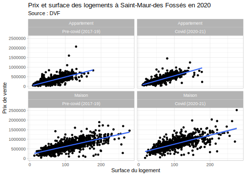
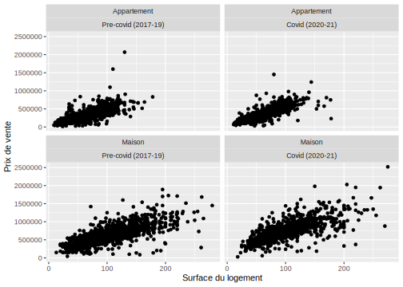
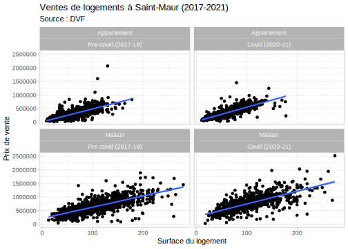
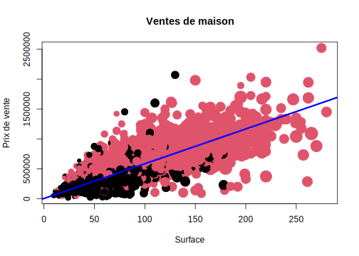
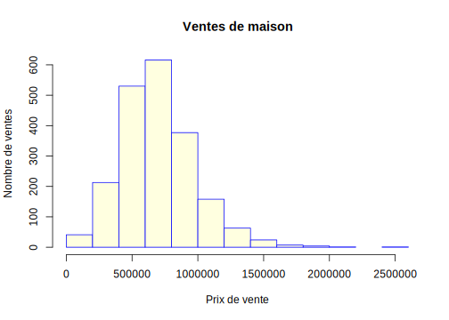
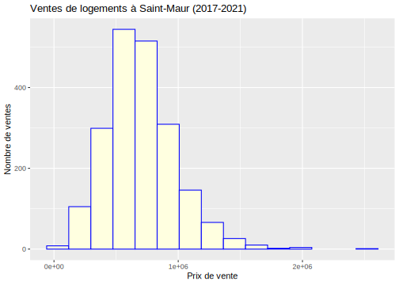
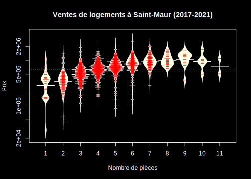
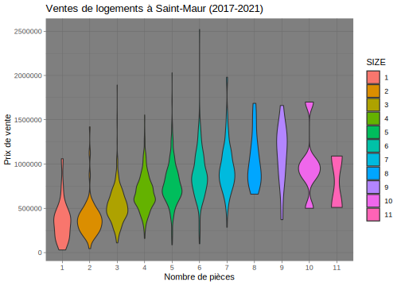

Partie 12 Initiation à tidyverse
- Mise en place : Télécharger le dossier exo_dvf et décompressez le sur votre ordinateur. Puis ouvrez le projet R
exo.Rprojdans Rstudio.
12.1 Introduction
12.1.1 Un nouvel empire ?
Le package tidyverse mis au point par les auteurs de R Studio est une collection de packages R qui se présente comme un nouveau langage permettant le traitement intégré des données selon une chaîne qui part de l’importation (readr) et de la mise en forme (tidyr) pour passer ensuite aux transformations(dplyr, broom), à la visualisation statistique (ggplot2) ou cartographique (ggmap), à la modélisation et enfin la restitution sous forme de documents (Rmarkdown).

La liste de package présentée dans la figure ci-dessus n’est d’ailleurs pas exhaustive car il existe des packages plus spécialisés dans l’analyse et le recodage des variables catégorielles (forcats) ou temporelles (lubridate), l’analyse de données textuelles (stringr), l’étude de données d’enquête (haven). En dehors de tidyverse proprement dit, les auteurs de ce package ont mis au point des outils d’analye textuelle (tidytext), de création de site web (shiny) qui s’inscrivent dans la même philosophie.

Bref, tidyverse se présente comme un nouvel empire qui remplacerait les vieux packages R destinés à tomber dans les poubelles de l’histoire et constituerait l’outil ultime de la science des données…
12.1.2 Pour une utilisation sélective
Les adhérents de la philosophie tidyverse ont donc pour pratique de charger d’emblée le superpackage tidyverse et d’inclure de ce fait l’ensemble de ces composantes qu’elles soient utiles ou non à l’analyse, ce qui ne manque pas de créer des conflits avec d’autres packages disponibles dans R :
L’auteur de ces lignes et beaucoup de chercheurs en sciences des données ne partagent cependant pas l’enthousiasme des auteurs de tidyverse et émettent plusieurs réserves.
- tidyverse n’est pas un très bon logiciel de statistique comparativement à d’autres packages tels que car (pour la régression), survey ou questionr (pour les analyses d’enquêtes).
- tidyverse n’est pas le meilleur package pour des représentation cartographiques et il existe d’autres packages plus effficaces tels que tmap, leaflet, mapsf, …
- tidyverse charge inutilement la mémoire de l’ordinateure packages pas toujours utiles aux objectifs que l’on s’est donné.
- tidyverse n’est pas le plus performant pour la gestion de très grandes masses de données comparativement au package data.table
- tidyverse ne fait souvent que dupliquer des packages existants
- …
Bref, il semble préférable d’utiliser au cas par cas les composantes de tidverse et de ne charger que celles dont on a réellement l’utilité et pour lesquelles les auteurs ont réellement apporter une innovation majeure. Deux packages relèvent clairement de cette catégorie : dplyr et ggplot2. C’est donc uniquement ces deux packages que nous allons utiliser ici en insistant sur leurs qualités et leur complémentarité.
12.1.3 Jeu de données
On charge un fichier sauvegardé au format .RDS appelé DSTM1_2023_V2.RDS
base<-readRDS("resources/data/dvf/dm/DSTM1_2023_V2.RDS")
base<-as.data.frame(base)
head(base)
#> com_code com_nom ann type prix sup nbp X Y
#> 1 93046 Livry-Gargan 2019 Maison 359980 105 5 665716.8 6868319
#> 2 93046 Livry-Gargan 2019 Appartement 271000 58 3 666339.0 6869657
#> 3 93005 Aulnay-sous-Bois 2019 Appartement 80000 72 4 664285.1 6872132
#> 4 93046 Livry-Gargan 2019 Appartement 149000 38 2 664728.0 6867419
#> 5 93005 Aulnay-sous-Bois 2019 Maison 230000 78 4 663570.8 6872907
#> 6 93005 Aulnay-sous-Bois 2019 Maison 200000 94 4 662340.0 6870911
#> dist_gare
#> 1 2522.1834
#> 2 1222.6446
#> 3 942.0401
#> 4 1920.6869
#> 5 1144.2156
#> 6 836.436712.1.3.1 Contenu du fichier
Ce dossier est une version simplifiée des Demandes de Valeurs Foncières et contient un échantillon des ventes de maisons ou d’appartements effectués dans un ensemble de communes d’Ile de France caractérisées par la présence d’un volume important de maisons et d’appartement.
Sources : Ces données sont disponibles sur le site opendatasoft sous l’appellation “Demandes de valeurs foncières géoloalisées”
La liste des variables est la suivante :
- com_code : code INSEE de la commune où a eu lieu la transaction
- com_nom : nom de la commune où a eu lieu la transaction
- ann : année de la transcation
- type : type de bien vendu (maison ou appartement)
- prix : prix de vente du bien
- surf : surface habitable du logement
- nbp : nombre de pièces du logement
- X : cordonnées projetées de longitude
- Y : coordonnées projetées de latitude
- dist_gare : distance à la gare la plus proche en mètres
summary(base)
#> com_code com_nom ann type
#> Min. :77373 Length:94530 Min. :2017 Appartement:58415
#> 1st Qu.:92002 Class :character 1st Qu.:2018 Maison :36115
#> Median :93029 Mode :character Median :2019
#> Mean :91281 Mean :2019
#> 3rd Qu.:94068 3rd Qu.:2020
#> Max. :95607 Max. :2021
#> prix sup nbp X
#> Min. : 13500 Min. : 9.00 Min. : 1.000 Min. :627324
#> 1st Qu.: 164000 1st Qu.: 48.00 1st Qu.: 2.000 1st Qu.:643478
#> Median : 243000 Median : 65.00 Median : 3.000 Median :658934
#> Mean : 296945 Mean : 70.23 Mean : 3.288 Mean :653699
#> 3rd Qu.: 360000 3rd Qu.: 85.00 3rd Qu.: 4.000 3rd Qu.:663441
#> Max. :3131000 Max. :299.00 Max. :15.000 Max. :673401
#> Y dist_gare
#> Min. :6830664 Min. : 27.84
#> 1st Qu.:6855834 1st Qu.: 548.93
#> Median :6864402 Median : 901.37
#> Mean :6862812 Mean : 999.69
#> 3rd Qu.:6870676 3rd Qu.:1326.11
#> Max. :6884258 Max. :3768.9212.2 Manipuler avec dplyr
Nous allons passer rapidement en revue quelques commandes de base de dplyr à travers des exemples précis d’application.On commence par charger le package dlyr qui est une partie de l’univers tidyverse mais que l’on peut utiliser indépendamment du reste de l’empire d’Hadley Wickham…

12.2.1 filter()
La commande filter() permet de sélectionner des lignes. Deux syntaxes sont possibles :
filter(tableau, condition1, condition2, …)- tableau
%>% filter(}condition1, condition2, ...)
On préfrera la seconde syntaxe qui évite de mélanger dans la parenthèse le nom du tableau et les conditions de sélection. La fonction %>% est un pipeline (en abrégé ‘pipe’) qui peut se traduire par ‘et ensuite’ lorsque l’on enchaîne une série d’instruction.
Par exemple, si on veut sélectionner la commune de St-Maur-des-Fossés dont le code est 94068 on pourra écrire le programme suivant
# Solution R-Base
don<-base[base$com_code=="94068",]
head(don,3)
#> com_code com_nom ann type prix sup nbp X
#> 60 94068 Saint-Maur-des-Fossés 2019 Appartement 170000 35 3 661127.9
#> 61 94068 Saint-Maur-des-Fossés 2019 Appartement 362000 59 3 663139.1
#> 62 94068 Saint-Maur-des-Fossés 2019 Appartement 315000 52 3 661660.3
#> Y dist_gare
#> 60 6856876 522.3698
#> 61 6856243 868.9349
#> 62 6855562 896.2634
#Solution dplyr
don<-base %>% filter(com_code=="94068")
head(don,3)
#> com_code com_nom ann type prix sup nbp X
#> 1 94068 Saint-Maur-des-Fossés 2019 Appartement 170000 35 3 661127.9
#> 2 94068 Saint-Maur-des-Fossés 2019 Appartement 362000 59 3 663139.1
#> 3 94068 Saint-Maur-des-Fossés 2019 Appartement 315000 52 3 661660.3
#> Y dist_gare
#> 1 6856876 522.3698
#> 2 6856243 868.9349
#> 3 6855562 896.2634A première vue il n’y a pas beaucoup de différence entre R-Base et dplyr. Mais l’avantage de ce dernier apparaît mieux lorsque l’on veut effectuer une solution selon plusieurs critères. Par exemple, supposons qu’on veuille sélectionner les ventes de maison de 80 à 120 m2 à Saint-Maur des fossés en 2020 :
# Solution R-Base
don<-base[base$com_code=="94068" &
base$type=="Maison" &
base$ann == 2020 &
base$sup >= 80 &
base$sup <= 120,]
head(don,3)
#> com_code com_nom ann type prix sup nbp X
#> 2817 94068 Saint-Maur-des-Fossés 2020 Maison 1500000 120 5 663646.8
#> 3340 94068 Saint-Maur-des-Fossés 2020 Maison 773313 80 4 661871.6
#> 3342 94068 Saint-Maur-des-Fossés 2020 Maison 610000 93 4 661389.3
#> Y dist_gare
#> 2817 6855738 778.2111
#> 3340 6855967 457.8792
#> 3342 6854505 1867.5387
#Solution dplyr
don<-base %>% filter(com_code=="94068",
type=="Maison",
ann == 2020,
sup >= 80,
sup <= 120)
head(don,3)
#> com_code com_nom ann type prix sup nbp X Y
#> 1 94068 Saint-Maur-des-Fossés 2020 Maison 1500000 120 5 663646.8 6855738
#> 2 94068 Saint-Maur-des-Fossés 2020 Maison 773313 80 4 661871.6 6855967
#> 3 94068 Saint-Maur-des-Fossés 2020 Maison 610000 93 4 661389.3 6854505
#> dist_gare
#> 1 778.2111
#> 2 457.8792
#> 3 1867.5387Le code est désormais beaucoup plus léger et beaucoup plus clair dans le cas de dplyr, surtout si l’on procède à une indentation des conditions.
12.2.2 select()
La commande select() permet de choisir des variables c’est-à-dire des colonnes dans un tableau. Supposons à titre d’exemple que l’on veuille créer un tableau ne contenant que les variables com_nom, type, prix et surface.
# Solution R-Base
don<-base[,c("com_nom", "type","prix","sup")]
head(don,3)
#> com_nom type prix sup
#> 1 Livry-Gargan Maison 359980 105
#> 2 Livry-Gargan Appartement 271000 58
#> 3 Aulnay-sous-Bois Appartement 80000 72
#Solution dplyr
don<-base %>% select(com_nom, type, prix, sup)
head(don,3)
#> com_nom type prix sup
#> 1 Livry-Gargan Maison 359980 105
#> 2 Livry-Gargan Appartement 271000 58
#> 3 Aulnay-sous-Bois Appartement 80000 72La principale différence entre les deux écritures est l’absence d’apostrophe “” dans la liste du nom des variables utilisées par select() ce qui est tout de même un gain de temps précieux.
On peut procéder à des sélections par numéro de colonnes et on peut supprimer des variables avec l’opérateur “-”. Par exemple, pour retirer les variables X et Y on a deux écritures possibles en dplyr
# Solution R-Base
don<-base[,c(1:7,10)]
head(don,3)
#> com_code com_nom ann type prix sup nbp dist_gare
#> 1 93046 Livry-Gargan 2019 Maison 359980 105 5 2522.1834
#> 2 93046 Livry-Gargan 2019 Appartement 271000 58 3 1222.6446
#> 3 93005 Aulnay-sous-Bois 2019 Appartement 80000 72 4 942.0401
#Solution dplyr n°1
don<-base %>% select(1:7,10)
head(don,3)
#> com_code com_nom ann type prix sup nbp dist_gare
#> 1 93046 Livry-Gargan 2019 Maison 359980 105 5 2522.1834
#> 2 93046 Livry-Gargan 2019 Appartement 271000 58 3 1222.6446
#> 3 93005 Aulnay-sous-Bois 2019 Appartement 80000 72 4 942.0401
#Solution dplyr n°2
don<-base %>% select(-X,-Y)
head(don,3)
#> com_code com_nom ann type prix sup nbp dist_gare
#> 1 93046 Livry-Gargan 2019 Maison 359980 105 5 2522.1834
#> 2 93046 Livry-Gargan 2019 Appartement 271000 58 3 1222.6446
#> 3 93005 Aulnay-sous-Bois 2019 Appartement 80000 72 4 942.040112.2.3 mutate()
La commande mutate() permet de créer de nouvelles variables ou de modifier des variables existantes. Supposons par exemple qu’on veuille créer un tableau contenant pour la commune de Saint-Maur une variable prix au m2 et une variable distance à la gare en km.
# Solution R-Base
don<-base[base$com_code==94068,]
don$prixm2<-don$prix/don$sup
don$dist_gare<-don$dist_gare/1000
don<-don[,c("prixm2", "dist_gare")]
head(don,3)
#> prixm2 dist_gare
#> 60 4857.143 0.5223698
#> 61 6135.593 0.8689349
#> 62 6057.692 0.8962634
#Solution dplyr
don<-base %>% filter(com_code==94068) %>% # sélection de Saint-Maur
mutate(prixm2 = prix/sup, # création du prix au m2
dist_gare = dist_gare/1000)%>% # conversion de la distance en km
select(prixm2,dist_gare) # sélection des variables utiles
head(don,3)
#> prixm2 dist_gare
#> 1 4857.143 0.5223698
#> 2 6135.593 0.8689349
#> 3 6057.692 0.8962634Nous voyons ici l’intérêt du pipeline %>% qui permet d’enchaîner de façon simple les différentes opérations effectuées respectivement par chacune des fonctions. La lecture du programme est beaucoup plus naturelle que dans le cas de R-Base
12.2.4 arrange()
La commande mutate() permet enfin de trier le tableau selon une ou plusieurs clés de tri. Reprenons par exemple le programme précédent et essayons de trier les résultats en fonction de la distance à la gare.
# Solution R-Base
don <- base[base$com_code==94068,]
don$prixm2 <- don$prix/don$sup
don$dist_gare <- don$dist_gare/1000
don <- don[,c("prixm2", "dist_gare")]
don <- don[order(don$dist_gare),]
head(don,3)
#> prixm2 dist_gare
#> 9335 4642.000 0.03447172
#> 82459 5053.571 0.03447172
#> 6124 8295.455 0.03622251
tail(don,3)
#> prixm2 dist_gare
#> 5987 5343.750 2.164269
#> 56051 3437.466 2.170164
#> 83391 3750.000 2.170164
#Solution dplyr
don<-base %>% filter(com_code==94068) %>% # sélection de Saint-Maur
mutate(prixm2 = prix/sup, # création du prix au m2
dist_gare = dist_gare/1000)%>% # conversion de la distance en km
select(prixm2,dist_gare) %>% # sélection des variables utiles
arrange(dist_gare)
head(don,3)
#> prixm2 dist_gare
#> 1 4642.000 0.03447172
#> 2 5053.571 0.03447172
#> 3 8295.455 0.03622251
tail(don,3)
#> prixm2 dist_gare
#> 6628 5343.750 2.164269
#> 6629 3437.466 2.170164
#> 6630 3750.000 2.17016412.2.5 group_by() & summarise()
En dehors des fonctions élémentaires précédentes, dplyr permet des manipulations beaucoup plus avancées avec des fonctions telles que group_by() et summarise() qui remplacent les fonctions de type tapply() ou aggregate() utilisées dans R-base. On se limitera ici à quelques cas très simple d’utilisation de ces deux fonctions
- Exemple 1 : Dénombrement
Supposons qu’on veuille connaître le type de logement vendu chaque année pour la commune de St-Maur
## Solution R-base
don <- base[base$com_code==94068,]
table(don$type, don$ann)
#>
#> 2017 2018 2019 2020 2021
#> Appartement 931 906 986 837 935
#> Maison 407 383 396 389 460
## Solution dplyr
don <- base %>% filter(com_code == 94068) %>%
group_by(type, ann) %>%
count()
don
#> # A tibble: 10 × 3
#> # Groups: type, ann [10]
#> type ann n
#> <fct> <int> <int>
#> 1 Appartement 2017 931
#> 2 Appartement 2018 906
#> 3 Appartement 2019 986
#> 4 Appartement 2020 837
#> 5 Appartement 2021 935
#> 6 Maison 2017 407
#> 7 Maison 2018 383
#> 8 Maison 2019 396
#> 9 Maison 2020 389
#> 10 Maison 2021 460On récupère un tableau de données facile à exploiter.
- Exemple 2 : agrégation
On cherche à connaître les prix minimum, moyen et maximum à St Maur par année et par type de logement :
## Solution R-base
don <- base[base$com_code==94068,]
don$prixm2 <- don$prix/don$sup
tab1<-aggregate(don$prixm2,
by= list(don$ann,don$type),
FUN="min")
names(tab1)<-c("ann","type","minimum")
tab2<-aggregate(don$prixm2,
by= list(don$ann,don$type),
FUN="mean")
names(tab2)<-c("ann","type","moyenne")
tab3<-aggregate(don$prixm2,
by= list(don$ann,don$type),
FUN="max")
names(tab3)<-c("ann","type","maximum")
tab<-merge(tab1,tab2, by=c("ann","type"))
tab<-merge(tab, tab3, by=c("ann","type"))
tab
#> ann type minimum moyenne maximum
#> 1 2017 Appartement 625.0000 4747.739 14675.00
#> 2 2017 Maison 782.1229 6183.825 19000.00
#> 3 2018 Appartement 534.4828 5061.336 16302.84
#> 4 2018 Maison 724.4565 6716.093 19722.22
#> 5 2019 Appartement 548.9130 5225.323 18142.86
#> 6 2019 Maison 564.1026 6830.394 15111.11
#> 7 2020 Appartement 800.7812 5639.620 18240.97
#> 8 2020 Maison 1003.3333 7391.001 16851.85
#> 9 2021 Appartement 564.5161 5912.692 18150.00
#> 10 2021 Maison 1215.6863 8030.321 18011.67## Solution dplyr
tab <- base %>% filter(com_code == 94068) %>%
mutate(prixm2 = prix/sup)%>%
group_by(type, ann) %>%
summarise(minimum = min(prixm2),
maximum=max(prixm2),
moyenne = mean(prixm2))
#> `summarise()` has grouped output by 'type'. You can
#> override using the `.groups` argument.
tab
#> # A tibble: 10 × 5
#> # Groups: type [2]
#> type ann minimum maximum moyenne
#> <fct> <int> <dbl> <dbl> <dbl>
#> 1 Appartement 2017 625 14675 4748.
#> 2 Appartement 2018 534. 16303. 5061.
#> 3 Appartement 2019 549. 18143. 5225.
#> 4 Appartement 2020 801. 18241. 5640.
#> 5 Appartement 2021 565. 18150 5913.
#> 6 Maison 2017 782. 19000 6184.
#> 7 Maison 2018 724. 19722. 6716.
#> 8 Maison 2019 564. 15111. 6830.
#> 9 Maison 2020 1003. 16852. 7391.
#> 10 Maison 2021 1216. 18012. 8030.On aboutit au même résultat mais l’écriture en dplyr est beaucoup plus concise et beaucoup plus élégante qu’en R-base.
12.3 Visualiser avec ggplot2
On commence par charger le package ggplot2 qui est une partie de l’univers tidyverse mais que l’on peut utiliser indépendamment du reste de l’empire d’Hadley Wickham…

12.3.1 Les différentes étapes
- la commande ggplot(data) initie la création du graphique.
- la commande aes() qui est l’abrévation de aesthetics définit les paramètres généraux de l’ensemble du graphique et comporte en général
- x = variable liée à l’axe horizontal
- y= variable liée à l’axe vertical
- colour= : variable définissant des groupes / couleur
- shape= : variable définissant des groupes / forme
- la commande geom_xxx crée un graphique de type xxx
- les commandes additionnelles scale_xxx précisent les axes
- la commande additionelle facet_xxx partitionne la figure en plusieurs
- la commande theme_xxx retouche l’ensemble des paramètres de couleur, police, épaisseur
N.B. Toutes les étapes ci-dessus ne sont pas obligatoires.
12.3.2 La figure à réaliser
Comment réaliser la figure ci-dessous ?
#> `geom_smooth()` using formula = 'y ~ x'
12.3.3 La construction pas à pas
On commence par préparer le tableau de données avec dplyr :
sel<-base %>% filter(com_code==94068) %>%
mutate(periode = as.factor(ann>2019))%>%
select(periode, type, prix, sup, nbp)
levels(sel$periode)<-c("Pre-covid (2017-19)","Covid (2020-21)")
head(sel)
#> periode type prix sup nbp
#> 1 Pre-covid (2017-19) Appartement 170000 35 3
#> 2 Pre-covid (2017-19) Appartement 362000 59 3
#> 3 Pre-covid (2017-19) Appartement 315000 52 3
#> 4 Pre-covid (2017-19) Appartement 405000 62 2
#> 5 Pre-covid (2017-19) Maison 174500 36 2
#> 6 Pre-covid (2017-19) Appartement 344700 63 3On définit le tableau de données avec ggplot() et les variables principales avec aes()

On ajoute le type principal du graphique avec la commande geom_point()

On retouche les axes horizontaux et verticaux en les passant en logarithme et en leur donnant un titre.
ggplot(sel) +
aes(x = sup) +
aes(y = prix) +
geom_point() +
scale_x_continuous(name="Surface du logement")+
scale_y_continuous(name="Prix de vente")
On segmente le graphique en facettes selon une ou plusieurs variables avec facet_wrap(). Du coup, on retire ces variables de l’esthétique générale :
ggplot(sel) +
aes(x = sup) +
aes(y = prix) +
geom_point() +
scale_x_continuous(name="Surface du logement")+
scale_y_continuous(name="Prix de vente")+
facet_wrap(vars(type, periode),ncol= 2)
On ajoute dans chaque facette une droite de tendance et son intervalle de confiance avec geom_smooth(). On précise method=“lm” pour avoir une droite et non pas une courbe
ggplot(sel) +
aes(x = sup) +
aes(y = prix) +
geom_point() +
scale_x_continuous(name="Surface du logement")+
scale_y_continuous(name="Prix de vente")+
facet_wrap(vars(type, periode),ncol= 2)
geom_smooth(method="lm")
#> geom_smooth: na.rm = FALSE, orientation = NA, se = TRUE
#> stat_smooth: na.rm = FALSE, orientation = NA, se = TRUE, method = lm
#> position_identityOnajoute un titre principal avec ggtitle() et on retouche l’ensemble de l’apparence avec theme_light().
ggplot(sel) +
aes(x = sup) +
aes(y = prix) +
geom_point() +
scale_x_continuous(name="Surface du logement")+
scale_y_continuous(name="Prix de vente")+
facet_wrap(vars(type, periode),ncol= 2)+
geom_smooth(method="lm") +
ggtitle(label = "Ventes de logements à Saint-Maur (2017-2021)",
subtitle = "Source : DVF ") +
theme_light()
#> `geom_smooth()` using formula = 'y ~ x'
12.3.4 Comparaison avec R-Base
La principale différence réside dans la construction séquentielle de la figure avec l’opérateur +. A tout moment on peut sauvegarder la figure au cours d’une des étapes décrites dans l’exemple. On parle de pipeline pour ce type de programme que l’on retrouve dans la manipulation de données avec tidyverse et dplyr.
La seconde différence réside dans la production rapide d’une figure de qualité graphique acceptable sans avoir besoin de spécifier les paramètres par() de R-Base.
Au total, ggplot2 s’impose actuellement comme un standard mondial autour duquel se greffent d’autres applications. Par exemple, on peut rendre interactif un graphique ggplot() en le couplant avec plotly().
Mais … ggplot2 est beaucoup moins simple qu’il n’y paraît de prime abord. Et on peut facilement s’arracher les cheveux sur certaines commandes !
12.3.5 Attention ! Paramètres aes() locaux et globaux
Une des plus grandes difficultés que l’on rencontre dans ggplot() est la manipulation du paramètre aes() qui peut renvoyer :
- soit à des paramètres globaux s’ils apparaissent dans le ggplot initial ou dans des lignes de codes isolées
- soit à des paramètres locaux, s’ils apparaissent à l’intérieur d’une fonction geom().
Deux exemples rapides pour bien comprendre
- type est un paramètre global : dans ce cas il s’applique à toutes les commandes qui suivent. Il y aura donc deux droites de régression générées par geom_smooth
ggplot(sel, aes(x = sup, y = prix, color = type)) +
geom_point() +
geom_smooth(method="lm")
#> `geom_smooth()` using formula = 'y ~ x'
- type est un paramètre local de geom_point() : dans ce cas il n’aura pas d’effet sur geom_smooth() qui va générer une seule droite de régression.
ggplot(sel, aes(x = sup, y = prix)) +
geom_point(aes(color=type)) +
geom_smooth(method="lm")
#> `geom_smooth()` using formula = 'y ~ x'
12.4 Comparaison R-Base / Ggplot2
12.4.2 X quantitative continue
12.4.2.1 hist (R-base)
sel2<-sel[sel$type=="Maison",]
hist(sel2$prix,breaks = 15,
col = "lightyellow",
border = "blue",
xlab="Prix de vente",
ylab = "Nombre de ventes",
main = "Ventes de maison")
12.4.2.2 geom_histogram (ggplot2)
# On démarre par une ligne de tidyverse ...
sel %>% filter(type=="Maison") %>%
# ... en on embraye sur ggplot2
ggplot() +
aes(x =prix) +
# Appel de la fonction principale
geom_histogram( bins = 15,
fill="lightyellow",
col="blue"
) +
# Retouche de l'échelle
scale_x_continuous( name = "Prix de vente") +
scale_y_continuous(name = "Nombre de ventes")+
# Ajout du titre
ggtitle("Ventes de logements à Saint-Maur (2017-2021)")
12.4.3 X et Y quantitatives continues
12.4.3.1 plot (R-base)
plot(x = sel$sup,
y = sel$prix,
cex=0,
xlab="Surface",
ylab="Prix de vente",
main= "Ventes de maison")
points(x = sel$sup,
y = sel$prix,
col=sel$type,
cex=sqrt(sel$nbp),
pch=19)
abline(lm(sel$prix~sel$sup),
col="blue",
lwd=3)
12.4.3.2 geom_point (ggplot2)
# On définit les paramètres globaux
ggplot(sel, aes(x =sup, y=prix)) +
# On trace les points avec
# des paramètres locaux
geom_point(aes(color=type,
size = nbp)) +
# On ajoute la droite de régression
geom_smooth(method = "lm") +
# On ajoute les titres
scale_x_continuous(name="surface") +
scale_y_continuous(name="prix de vente") +
ggtitle("Ventes de logements à Saint-Maur (2017-2021)")
#> `geom_smooth()` using formula = 'y ~ x'
12.4.4 X quantitative continue et Y discrète
12.4.4.1 boxplot (R-base)
sel2<-sel[(sel$type=="Maison"),]
sel2$SIZE<-as.factor(sel2$nbp)
#levels(don2$SIZE)<-c("1 ou 2", "1 ou 2", "3 ou 4", "3 ou 4", "5 ou 6", "5 ou 6")
boxplot(sel2$prix~sel2$SIZE,
col=rainbow(n=12, alpha=0.5),
xlab="Nombre de pièces",
ylab="Prix",
main= "Ventes de logements à Saint-Maur (2017-2021)")
12.4.4.2 geom_boxplot (ggplot2)
# On filtre le tableau et on change SIZE en factor
sel %>% filter(type=="Maison") %>%
mutate(SIZE = as.factor(nbp)) %>%
# On définit les paramètres principaux
ggplot(aes(x= SIZE,y = prix)) +
# On ajoute la boxplot
geom_boxplot(aes(fill= SIZE)) +
# On ajoute les titres
scale_x_discrete(name="Nombre de pièces") +
scale_y_continuous(name="Prix de vente") +
ggtitle("Ventes de logements à Saint-Maur (2017-2021)")
12.4.4.3 beanplot (R-base + package beanplot)
par(bg="black",fg="white",col.lab ="white", col.axis ="white",col.main="white" )
sel2<-sel[(sel$type=="Maison"),]
sel2$SIZE<-as.factor(sel2$nbp)
#levels(don2$SIZE)<-c("1 ou 2", "1 ou 2", "3 ou 4", "3 ou 4", "5 ou 6", "5 ou 6")
library(beanplot)
beanplot(sel2$prix~sel2$SIZE,
col=c("lightyellow","red"),
xlab="Nombre de pièces",
ylab="Prix",
main= "Ventes de logements à Saint-Maur (2017-2021)")
#> log="y" selected
12.4.4.4 geom_violin (ggplot2)
# On filtre le tableau et on change SIZE en factor
sel %>% filter(type=="Maison") %>%
mutate(SIZE = as.factor(nbp)) %>%
# On définit les paramètres principaux
ggplot(aes(x= SIZE,y = prix)) +
# On ajoute la géométrie
geom_violin(aes(fill= SIZE)) +
# On ajoute les titres
scale_x_discrete(name="Nombre de pièces") +
scale_y_continuous(name="Prix de vente") +
ggtitle("Ventes de logements à Saint-Maur (2017-2021)") +
# On passe en thème "dark"
theme_dark()
12.5 Conclusion
12.5.1 R-base
- simple d’utilisation
- peut être amélioré par des packages spécialisés
- permet de créer ses propres fonctions
- n’impose pas d’apprendre tidyverse
12.5.2 ggplot2
- standard mondial du graphisme … actuellement
- compatible avec la religion du tidyverse
- rédaction séquentielle très efficace
- mais apprentissage difficile (plusieurs semaines …)